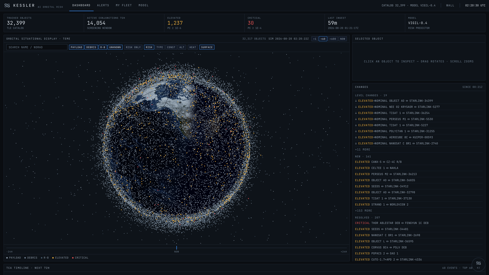

An AI watch officer for the satellites you use every day.
You’ve already used a satellite today.
Seven astronauts. Two hours in their escape capsules.
In November 2021, a missile test shattered a dead satellite into 1,500+ trackable fragments. The station swept past the cloud every 90 minutes.
Space agencies and mega‑constellations have mission control.
Everyone else flies blind.
Kessler. Mission control for everyone else.

From raw catalog to ranked risk, every hour.
We put our risk model, VIGIL, up against ESA’s own AI.
No black boxes.
Is this alarm real?
Most high-risk alerts fade before closest approach. In research tests, VIGIL learned to spot many of them, so a small team can focus on the real threats.
When the Sun storms, orbits move.
Kessler reads the Sun live from NOAA and flags every close approach a storm puts in doubt.
Kessler AI doesn’t chat about the console. It drives it.
Every close approach, flyable.
Encounter plane. Space camera. AI narration with a voice. And a what-if maneuver panel:
One click from worry to a plan.
The smallest along-track burn that clears the alert line, searched at several lead times, then replayed before and after in the simulator.
From a NORAD id to a plain-language verdict.
Honest by design.
Built end to end. Running right now.